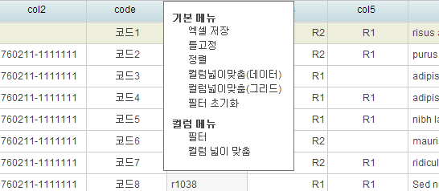

RichUI에서는 복수 건 또는 대량의 데이터를 리스트에 보여주기 위한 컴포넌트로 그리드 컴포넌트을 제공합니다.
그리드의 대표적인 기능으로는 소계 및 합계 지원, Header Grouping, 컬럼 고정, 컬럼 merge, 행 merge, 정렬, 엑셀 다운로드 등이 있습니다.
그리드의 세부 구성은 크게 LColumnModel, LGridPanel, LPager으로 구성되어 있습니다.
기본적으로 그리드는 Buffer 방식으로 처리됨니다.
전체 데이터를 한번에 DOM에 rendering 하지 않고 현재 화면에 보이는 부분만 DOM을 생성하기 때문에 메모리 증가를 최소화하며 성능에서도 유리합니다.
그리드의 기본적인 용어와 개념에 대한 정의는 다음과 같습니다.
사용하는 방법은 다음과 같습니다.
그리드를 생성하기 전에 LColumnModel에 대해서 알아보겠습니다.
LColumnModel은 그리드 상에 컬럼 정보를 기술하는 부분으로 앞서 선언한 데이터셋의 필드 정보와 매칭되는 필드를 구성하는 field 속성과 컬럼헤더 정보를 표시하는 label 속성, 컬럼 정보에 대한 편집가능 여부를 설정하는 editable, 정렬 기능을 제공하는 sortable, 편집기를 제공하는 editor등 많은 속성들이 준비되어 있습니다. 개발자는 필요한 속성을 기술해 주면 쉽게 그리드를 구현할 수가 있습니다.
var columnModel = new Rui.ui.grid.LColumnModel({
freezeColumnId: 'col1', // [옵션] 해당 컬럼만까지 틀고정을 설정
columns: [
new Rui.ui.grid.LStateColumn(), // [옵션] Row의 상태를 표시하는 컬럼
new Rui.ui.grid.LSelectionColumn(), // [옵션] Row 선택표시 유무
new Rui.ui.grid.LNumberColumn(), // [옵션] Row Number
{ field: 'col1', label: '주민번호', sortable: true, editable: false, editor: col1TextBox, vMerge: true,
renderer: function(val, p, record){
// 데이터 레코드 필드('col2')가 주민번호('760221111113')동일하다면
// 해당 컬럼('col1')에 대해서 편집이 가능하도록 설정
p.editable = (record.get('col2') !== '760221111113');
return val;
} },
{ field: 'col2', sortable: true, align: 'center', width: 120, editor: col2TextBox, vMerge: false,
renderer: function(value, p, record, row, i) {
if(Rui.util.LObject.isEmpty(value) == false)
value = value.substring(0, 6) + '-' + value.substring(6);
return value;
} },
{ field: 'col8', label: 'Col3', align: 'right', sortable: true, editor: new Rui.ui.form.LNumberBox({decimalPrecision: 2, minValue: -1, maxValue: 10000 }),
renderer:Rui.util.LRenderer.moneyRenderer() },
{ field: 'date1' , align: 'center', editor: new Rui.ui.form.LDateBox(), renderer: 'date' },
{ id: 'btn', label: 'Button', width: 150, renderer: function(val, p, record, row, i){
return '<button type="button" class="L-grid-button">' + record.get('col1') + '</button>';
} }
]
});
라인 8~26 까지 개발자가 추가로 작성해야 하는 필드의 속성에 대한 설명입니다.
위 예제에서 renderer라는 속성은 그리드에 표시될 데이터를 가공하여 그리드의 해당 컬럼을 개발자가 정의한 형태로 표현합니다.
표현할 수 있는 방식은 매우 다양하므로 업무 특성이나 로직에 맞게 변경하여 사용합니다.
예를 들어, 해당 컬럼의 디자인(CSS스타일 적용, DOM 추가)이나 값을 변경할 경우에 적용하면 됩니다.
이어서 renderer의 파라미터 값에 대해 알아보겠습니다.
renderer: function(value, p, record, row, i) {
if(Rui.util.LObject.isEmpty(value) == false)
value = value.substring(0, 6) + '-' + value.substring(6);
return value;
}
renderer속성은 그외에 RichUI에서 미리 정의된 renderer 속성들이 있습니다. 예를 들면, 화폐단위 표시('money'), 날짜포멧('date')등 몇가지 기능들을 제공합니다. 더 자세한 내용은 Rui.util.LRenderer API를 참고하기 바랍니다.
이제 그리드에 표현할 컬럼 정보를 나열했으니 그리드에 어떤식으로 출력할지 알아보겠습니다.
그리드패널(Rui.ui.grid.LGridPanel)은 위에서 선언한 컬럼 모델을 가지고 어떤 형태로 UI 상에 보여줄지 결정하는 컴포넌트입니다.
예를 들면, 그리드의 크기 설정 및 자동 크기 조정(폭, 너비) 설정, 합계표시, 컬럼 모델 설정, 데이터셋 설정 등을 지원하는 속성들이 준비되어 있습니다.
이번에는 그리드를 생성하는 부분들을 소스를 보면서 알아보겠습니다.
var grid = new Rui.ui.grid.LGridPanel({
columnModel: columnModel, // 위에서 생성한 LColumnModel 객체를 기술
dataSet: dataSet, // 그리드 데이터로 사용할 LDataSet 객체를 기술
headerTools: true, // [옵션] 컬럼 헤더에 그리드 컬럼을 제어하는 header tool 표시
autoToEdit: true, // [옵션] cell 포커스시 자동으로 편집 가능한 상태로 전환
width: 600, // 기본 그리드 너비값을 설정
height: 317 // 기본 그리드 높이값을 설정
});
grid.render('defaultGrid');
지금까지 나온 코드를 작성하고 웹브라우저를 실행하여 정상적으로 동작하면 아래와 같은 그리드가 화면에 표시됩니다.
위 예제에서 headerTools 속성은 옵션 속성으로 그리드의 컬럼에 틀고정, 필터, 정렬 기능 등을 동적으로 제공하며
그리드의 데이터를 엑셀로 다운로드할 수 있는 기능을 제공합니다.
아래 그림은 그리드의 컬럼 헤더에 마우스를 위치했을 경우 표시되는 컨텍스트 메뉴입니다.

위 그림에서 틀고정을 columnModel의 속성으로 설정할 수도 있지만 헤더 메뉴를 이용해 동적 제어도 가능합니다.